بازیهای کلاسیک، مستقیم توی مرورگر
بدون نصب، بدون ثبتنام و بدون تبلیغ. PLAYCHIVE مجموعهای گزینششده از بازیهای آزاد و متنباز است که همینجا اجرا میشوند. یک مسابقه بده، یک شهربازی بساز یا چند دقیقهای با یک شوتر قدیمی دلتنگی کن.
- ۲۴بازی آمادهٔ اجرا
- ۰نصب، حساب کاربری یا تبلیغ
- WebAssemblyو HTML5 زیر کاپوت
همین الان بازی کن
هر بازی در صفحهٔ خودش باز میشود و محتوایش همراه خودش است. روی گوشی کنترل لمسی و روی کامپیوتر کیبورد و دسته کار میکند.
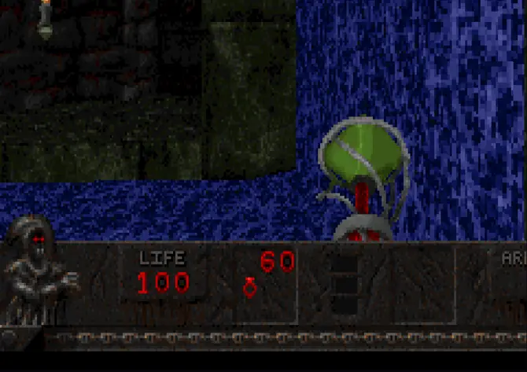
Blasphemer
شوتر فانتزیشوتر اولشخص فانتزی و تاریک روی موتور Heretic. بازی کامل است و همهٔ فایلهایش همراه خودش میآید.
اجرای بازی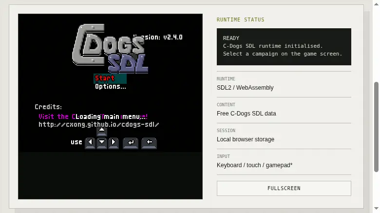
C-Dogs SDL
اکشناکشن از نمای بالا با کمپین کامل و حالت دوئل؛ تیراندازیهای شلوغ و پرتحرک، شبیه آرکیدهای قدیمی.
اجرای بازی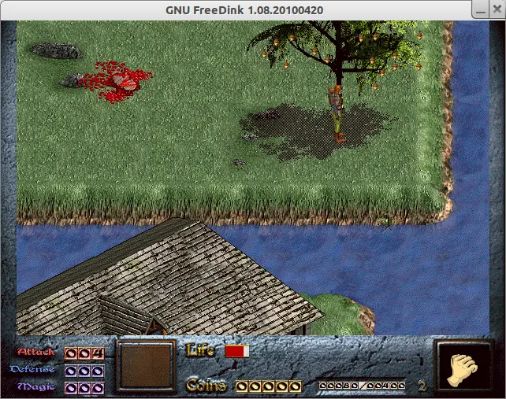
GNU FreeDink
ماجراجویی و کاوشماجراجویی نقشآفرینی دوبعدی با شوخطبعی عجیبوغریب. بازی کامل، با دادههای رسمی و رایگان.
اجرای بازی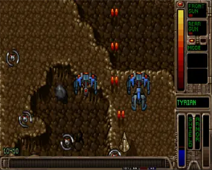
OpenTyrian2000
اکشنشوتر عمودی فضایی و کلاسیک؛ نسخهٔ رایگان Tyrian 2000 با دادههای freeware.
اجرای بازی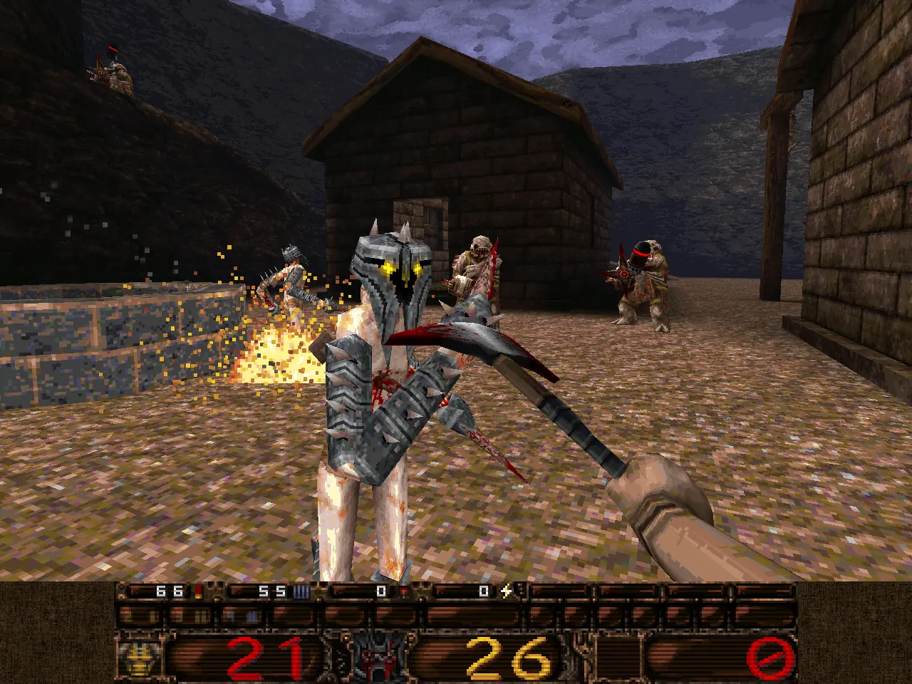
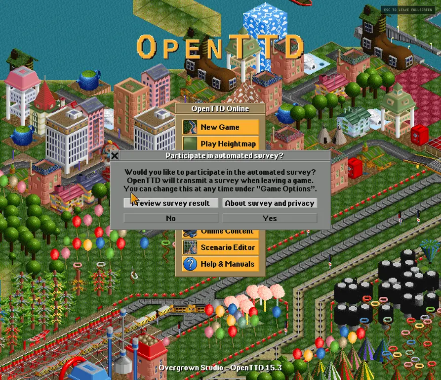
OpenTTD
استراتژیاستراتژی حملونقل: ریل و جاده بکش، قطار و کامیون راه بینداز و شبکهات را سودآور کن. گرافیک و موسیقیاش هم آزاد است.
اجرای بازی
FreeRCT
استراتژیشهربازی خودت را بساز: سرسره، چرخوفلک و مسیر بگذار، مهمانها را راضی نگه دار و حسابوکتابت را مثبت.
اجرای بازی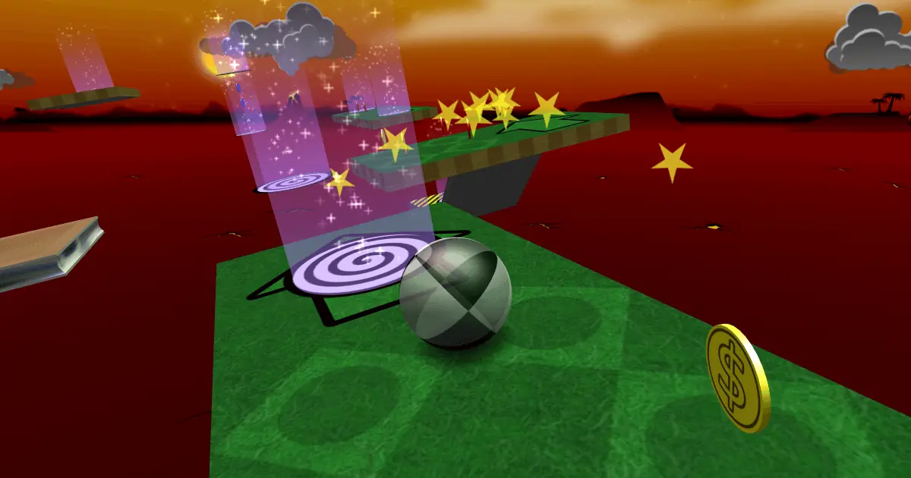
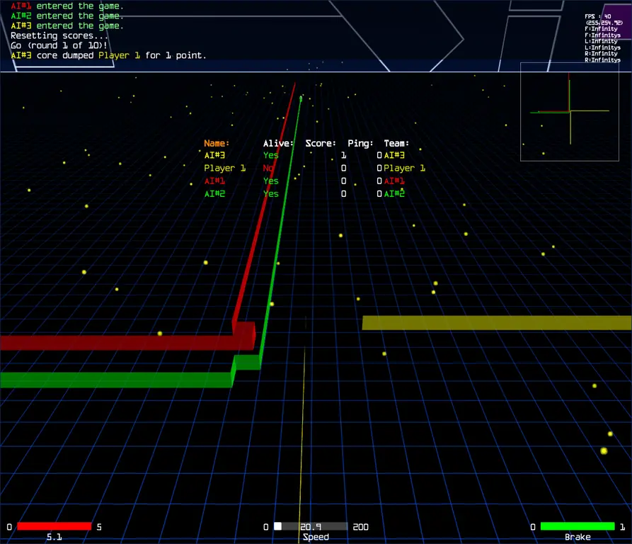
Armawebtron
آرکیدمسابقهٔ سهبعدی لایتسایکل در میدانی نئونی؛ ردّ نورانی بجا بگذار و رقیب را به دام بینداز.
اجرای بازی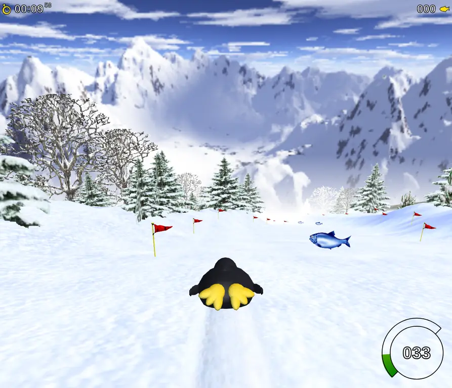
TuxRacer.js
مسابقهایپنگوئنی که روی برف سر میخورد: بیست مسیر سهبعدی و سرعتی که کمکم دستت میآید.
اجرای بازی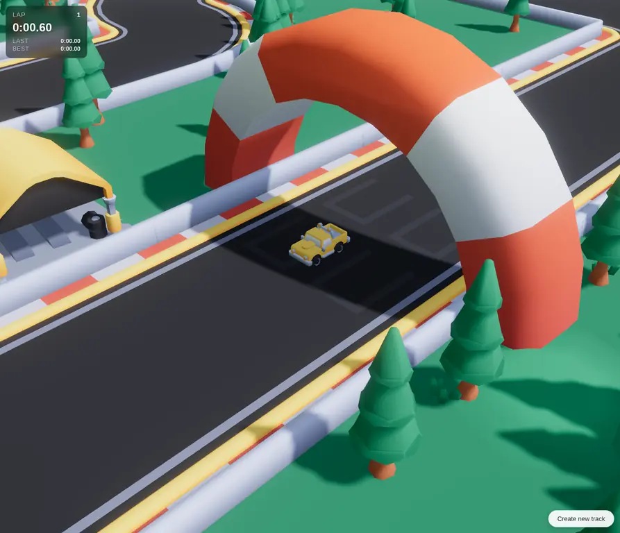
Starter Kit Racing
مسابقهای سهبعدیرانندگی سهبعدی با کامیون روی پیستی محلی؛ زمان هر دور ثبت میشود تا رکوردت را بشکنی.
اجرای بازی
Astray
پازل فیزیکییک توپ فولادی را در هزارتوهای سهبعدی هدایت کن؛ ساده شروع میشود، ولی مسیرها هر بار فرق دارند.
اجرای بازی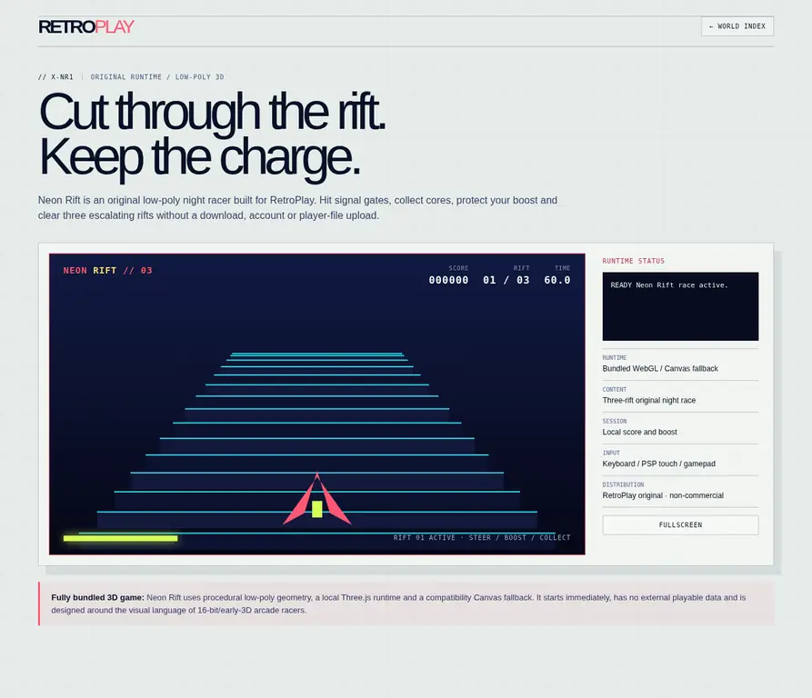

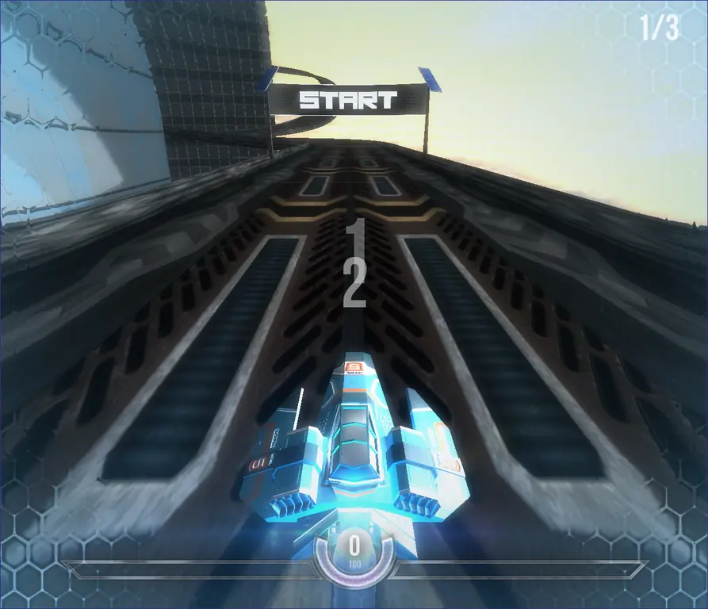

Hextris
پازل آرکیدپازل آرکید ششضلعی: حلقه را بچرخان و بلوکهای همرنگ را کنار هم بیاور، پیش از آنکه روی هم تلنبار شوند.
اجرای بازی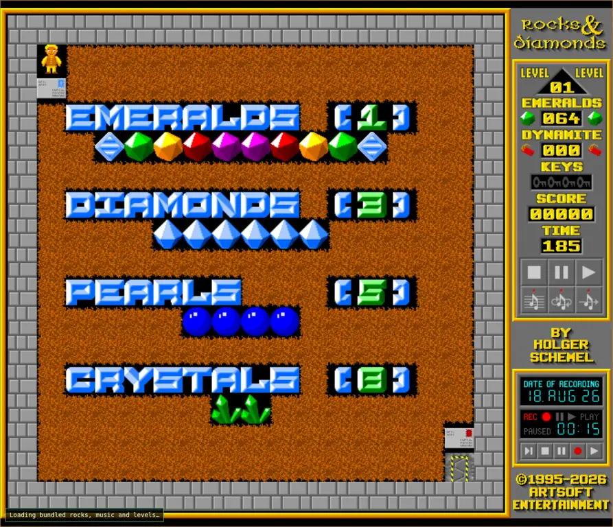
Rocks'n'Diamonds
پازل اکشنپازل اکشن کلاسیک؛ زمین را بکن، الماس جمع کن و از سنگهای در حال سقوط جا خالی بده.
اجرای بازی

2048
پازل آرکیدهمان پازل عددی معروف: مربعها را ادغام کن تا به ۲۰۴۸ برسی. بهترین امتیازت در مرورگر میماند.
اجرای بازی

A Dark Room
ماجراجویی و کاوشماجراجویی متنی که با یک آتش کوچک در اتاقی تاریک شروع میشود و کمکم دنیایی میسازد.
اجرای بازی
Digger Remastered
اکشننسخهٔ بازسازیشدهٔ بازی حفاری و اکشن سال ۱۹۸۳؛ تونل بزن، طلا جمع کن و از هیولاها دور بمان.
اجرای بازی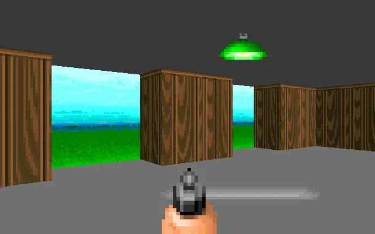
ECWolf
اکشنموتور سازگار با Wolfenstein 3D. اینجا فقط خود موتور هست و فایلهای دادهی قانونی را باید خودت انتخاب کنی.
اجرای بازی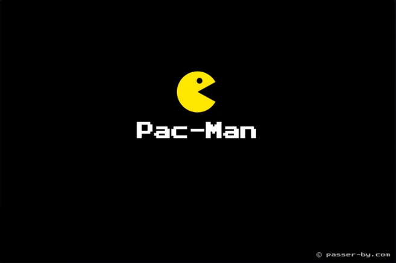
Pacman
آرکیدپکمن کلاسیک با مجوز MIT و دوازده مرحله؛ نقطهها را بخور و از روحهای باهوش فرار کن.
اجرای بازی
پرسشهای پرتکرار
PLAYCHIVE چیست؟
یک مجموعهٔ گزینششده از بازیهای کلاسیک، متنباز و رایگان که مستقیم در مرورگر اجرا میشوند. همهچیز با WebAssembly و HTML5 کار میکند، پس لازم نیست چیزی نصب کنی یا حساب کاربری بسازی.
واقعاً رایگان است؟ تبلیغ یا ثبتنام ندارد؟
بله. بازیهای آماده رایگاناند و هر کدام محتوای لازم برای اجرا را همراه خودشان دارند. ثبتنام، تبلیغ یا خرید درونبرنامهای در کار نیست. فقط ECWolf استثناست: موتورش اینجاست، ولی فایلهای دادهی قانونی را باید خودت انتخاب کنی.
روی گوشی و با دسته هم کار میکند؟
بله. روی گوشی کنترل لمسی به سبک PSP نمایش داده میشود و روی کامپیوتر میتوانی از کیبورد، ماوس یا گیمپد استفاده کنی. حالت تمامصفحه هم در همهٔ بازیها هست.
پیشرفتم کجا ذخیره میشود؟
فقط در حافظهٔ محلی مرورگر خودت و روی هیچ سروری نمیرود. اگر دادههای سایت را از مرورگر پاک کنی، ذخیرهها هم از بین میروند.
بدون اینترنت هم میشود بازی کرد؟
بله. دکمهٔ «Offline Pack» بالای صفحه همهٔ بازیهای آماده را در مرورگرت ذخیره میکند. بعد از دانلود اولیه، بدون اینترنت هم بازیها اجرا میشوند.
دووم یا کوییک اصلی هم هست؟
نه. PLAYCHIVE دادهی تجاری پخش نمیکند. بهجایش محتوای آزادی مثل Freedoom و LibreQuake را دارد. اگر فایل WAD قانونی داری میتوانی محلی واردش کنی و فایل از مرورگرت بیرون نمیرود.
چرا بعضی ورودیهای کاتالوگ دکمهٔ اجرا ندارند؟
بعضی پروژهها فقط به صفحهٔ رسمیشان لینک شدهاند، چون کد یا دادهشان اجازهٔ پخش مجدد ندارد. این ورودیها بهوضوح با برچسب «لینک خارجی» مشخص شدهاند و جزو بازیهای قابل اجرا حساب نمیشوند.
چطور باگ گزارش بدهم یا بازی پیشنهاد کنم؟
سورسکد در گیتهاب است و میتوانی همانجا Issue باز کنی. فقط مجوز بازی را هم بنویس تا بتوانیم بررسی کنیم که امکان گذاشتنش هست یا نه.
دربارهٔ PLAYCHIVE
PLAYCHIVE پروژهای غیرتجاری است که ماهان توکلی ساخته. هدفش این است که حس پیدا کردن بازیهای قدیمی را برگرداند، بدون دردسر نصب و حساب کاربری. نام و مجوز سازندگان هر بازی کنار همان بازی میماند و محتوای تجاری هم بهعنوان رایگان معرفی نمیشود. سورسکد در گیتهاب باز است.